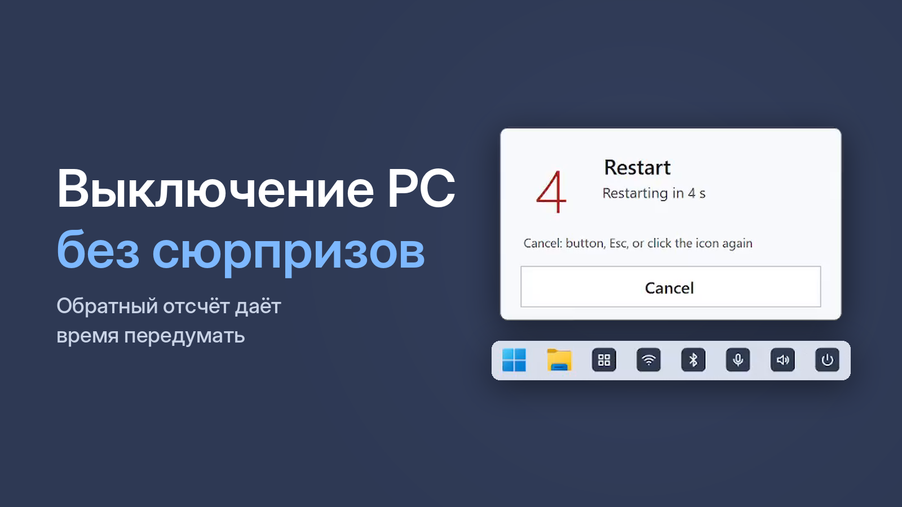

Ярлык перезагрузки компьютера на рабочий стол — Windows 10 и 11

Перезагрузка нужна чаще, чем кажется: после обновлений, когда «тормозит» система, отвалилось устройство или зависла программа. Вот как перезагружать компьютер быстрее в Windows 10 и 11.
Способ 1. Меню «Пуск»
Пуск → значок питания → Перезагрузка. Или Ctrl + Alt + Del → значок питания в правом нижнем углу → Перезагрузка — этот путь работает, даже когда «Пуск» не открывается.
Способ 2. Ярлык с командой
- Правой кнопкой по рабочему столу → Создать → Ярлык.
- Введите:
shutdown /r /t 30 - Назовите ярлык «Перезагрузка».
Компьютер перезагрузится через 30 секунд. Отменить можно командой shutdown /a — но её нужно успеть ввести, а отсчёта на экране не видно.
Способ 3. Кнопка с отсчётом и отменой
One Click Switcher добавляет на панель задач кнопку «Перезагрузка». После нажатия идёт отсчёт 5 секунд с кнопкой «Отмена» — передумали, нажмите её, Esc или ту же кнопку ещё раз.
Бесплатно · Windows 10 и 11 · без рекламы
Почему перезагрузка лучше, чем выключить и включить
В Windows 10 и 11 по умолчанию включён «быстрый запуск»: при выключении система частично сохраняет своё состояние, чтобы потом быстрее стартовать. Перезагрузка же запускает Windows полностью заново. Поэтому, если что-то работает не так, помогает именно перезагрузка.